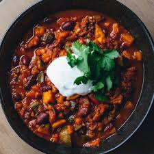

Chili Recipe

Looks ok, to be honest I've never made chili at home
Ingredients
- 1 pound lean ground beef
- 15 ounces tomato sauce
- 1 can kidney beans, drained
- 1 can chili beans, not drained
- 2 tablespoons chili powder
- salt and freshly ground black pepper
Steps
- Heat a large skillet over medium-high heat.
- Cook and stir ground beef until browned and crumbly.
- Stir in kidney beans, chili beans, and tomato sauce.
- Bring to a boil and stir in chili powder.
- Reduce heat to a simmer, and cook, until thickened.
- Seasonm to taste with salt and pepper.